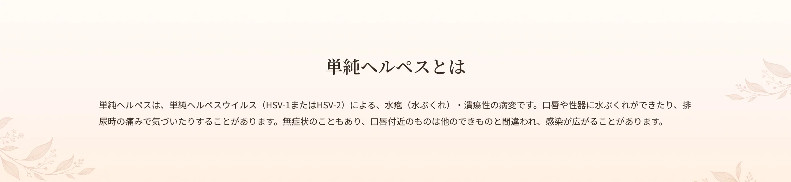
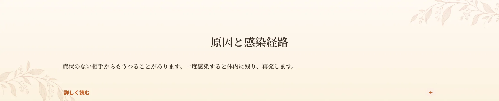
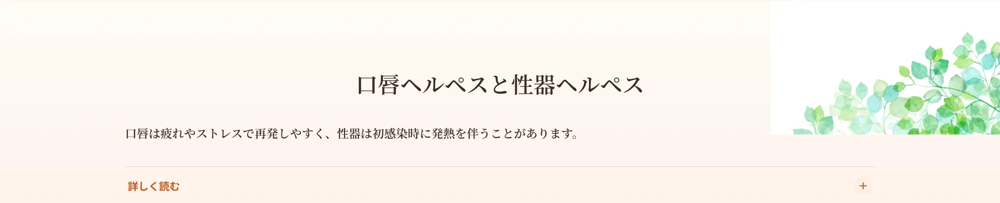
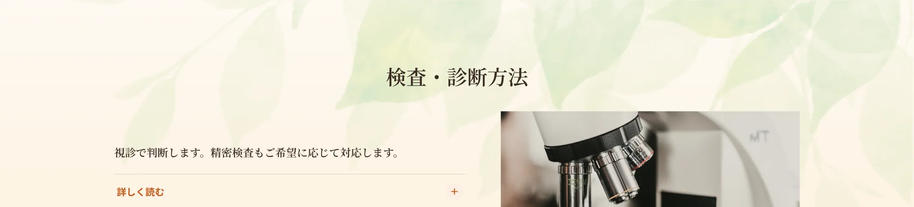
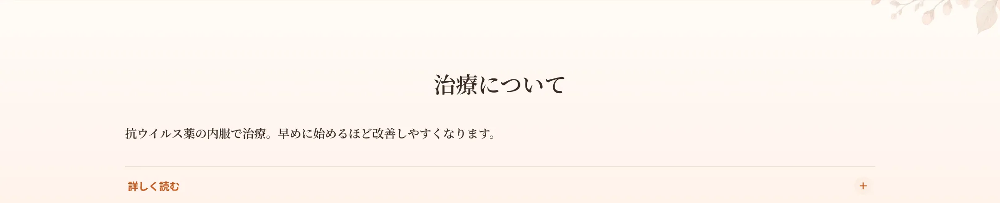
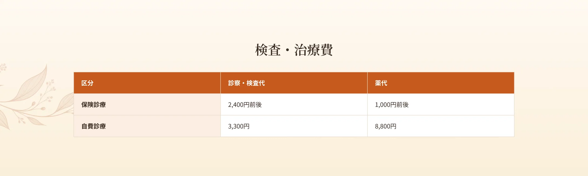
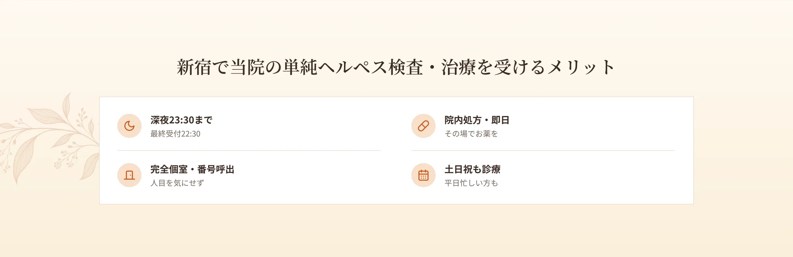

新宿駅から徒歩6分、エイチクリニック新宿では、単純ヘルペス（口唇ヘルペス・性器ヘルペス）の検査・治療を行っています。ヘルペスは痛みを伴う水ぶくれや潰瘍ができ、再発することがある感染症です。当院は匿名・完全個室・呼び出し番号制で、深夜23時30分まで・土日祝も受診可能。抗ウイルス薬を院内処方で当日お渡しできます。


感染者の病変部位や、性液・唾液などから排出されるウイルスが、相手の口腔・陰部・肛門などの粘膜や皮膚の傷に触れることで感染します。主に性行為で感染しますが、タオルやコップなどを介して感染することもあります。一度感染するとウイルスが体内に残り、再発することがあります。ウイルスに感染していても無症状でウイルスを排出していることが多く（70〜80%）、自覚症状のない相手からも感染する可能性があります。通常、接触から4〜7日で症状が出ます。

ヘルペス感染で多いのは大きく2つに分けられます。口唇ヘルペスは、口の周りや唇に痛みを伴う小さな水ぶくれができ、破れて潰瘍になります。再発しやすく、ストレスや疲労、免疫力の低下が引き金になります。性器ヘルペスは、性器や肛門周辺に痛みを伴う水ぶくれや潰瘍が現れ、初感染時には発熱・頭痛・リンパ節の腫れなど全身症状を伴うことがあります。再発の頻度には個人差があります。

視診で判断します。数日かかる精密な検査もご用意していますので、ご希望の方はお申し出ください。

抗ウイルス薬の内服で治療します。バルトレックス（バラシクロビル）などを用い、ウイルスの増殖を抑えます。性器ヘルペスの再発抑制にも用いられます。お薬は院内処方で当日お渡しできます。症状が出始めた早い段階で治療を始めると、改善が早まりやすくなります。



A.ウイルスが体内に残るため再発することがあります。再発抑制の治療もあります。
A.早い段階での治療開始が改善につながりやすいです。
A.自覚症状がなくてもウイルスを排出していることがあり、感染の可能性があります。
A.院内処方で当日お渡しできます。
A.深夜23:30まで（最終受付22:30）対応しています。